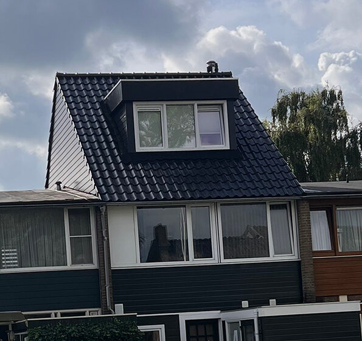

Kort antwoord: kijk eerst naar de bestaande kap
Een nokverhoging vergroot een schuin dak. Bij een eenzijdige variant verandert één dakvlak en verschuift de nok; bij een tweezijdige variant worden beide dakvlakken aangepast en komt de nok hoger. Je wint vooral stahoogte en bruikbaar volume op zolder.
Een dakopbouw voegt een bouwlaag of groter rechtwandig volume toe, meestal op een plat of daarvoor aangepast dakdeel. Dat kan meer volwaardige vloer met rechte wanden opleveren. Dakvorm is dus de eerste filter, maar draagkracht en lokale regels bepalen of het plan echt kan.


Bewaarbare keuzecheck: vergelijk deze 6 punten
- Daktype: schuin dak wijst richting nokverhoging; een geschikt plat dakdeel richting dakopbouw.
- Ruimtewens: zoek je vooral meer stahoogte op zolder, of een volledige extra kamerlaag met rechte wanden?
- Constructie: laat bestaande kap, vloeren, dragende wanden en fundering beoordelen. Een foto of buurproject bewijst geen draagkracht.
- Buitenkant: beide veranderen hoogte en aanzicht. Controleer daarom omgevingsplan en eventuele welstandseisen voor jouw adres.
- Vergunning: doe de officiële Vergunningcheck van het Omgevingsloket. Bewaar de uitkomst en voorwaarden bij je plan.
- Scope en budget: vergelijk dezelfde onderdelen: constructie, isolatie, kozijnen, kraanwerk, vergunning en binnenafbouw.
Wil je slechts op één plek meer licht en stahoogte? Dan kan een dakkapel voldoende zijn. Aanbouwdirect plaatst geen dakkapellen; lees eerst dakkapel of dakopbouw om een te groot project te voorkomen.
Prijs vergelijken zonder misleidend m²-bedrag
Een bruikbaar prijsgetal hoort bij een vastgelegde scope. Breedte, eenzijdige of tweezijdige kapaanpassing, staal, kozijnen, bereikbaarheid en hijswerk beïnvloeden de uitkomst. Vraag daarom niet alleen naar het eindbedrag, maar laat expliciet opnemen wat ontbreekt.
Onze online calculator geeft een casco-prijsindicatie als bandbreedte. Casco betekent hier: constructie, isolatie, wind- en waterdichte schil, kozijnen en elektra tot casco-niveau. Stucwerk, vloer, badkamer en schilderwerk binnen vallen daar niet standaard onder. Lees voor prijsdrivers ook kosten nokverhoging en kosten dakopbouw.
Vergunning en techniek: twee aparte checks
Een positieve vergunningcheck zegt niet dat de bestaande constructie sterk genoeg is; een haalbare constructie zegt niet dat het uiterlijk binnen de regels past. Regel beide sporen vóór je de planning vastzet. De Rijksoverheid zet de algemene stappen bij bouwen en verbouwen op volgorde.
Veelgestelde vragen
Is een nokverhoging hetzelfde als een dakopbouw?
Nee. Een nokverhoging vergroot een schuine kap; een dakopbouw voegt doorgaans een rechtwandig volume of bouwlaag toe.
Geeft een dakopbouw altijd meer ruimte?
Niet automatisch. De bruikbare winst hangt af van dakmaat, trap, indeling en constructie. Vergelijk een schets met netto loopruimte, niet alleen buitenmaten.
Kan een rijwoning een tweezijdige nokverhoging krijgen?
Dat kan soms, maar woningconstructie, aansluiting op buren, omgevingsplan en vergunning zijn bepalend. Laat dit per adres toetsen.
Heb ik in 2026 een vergunning nodig?
Dat verschilt per adres en ontwerp. Gebruik de actuele Vergunningcheck en neem bij twijfel contact op met je gemeente.
Wanneer krijg ik een definitieve prijs?
Na de online casco-bandbreedte bekijken we maatvoering, constructie en bereikbaarheid op locatie. Daarna kan een projectspecifieke offerte worden gemaakt.
Verder met jouw plan?
Check de casco-prijsindicatie online, of bel ons in Aalsmeer. Definitieve offerte na afspraak op locatie.